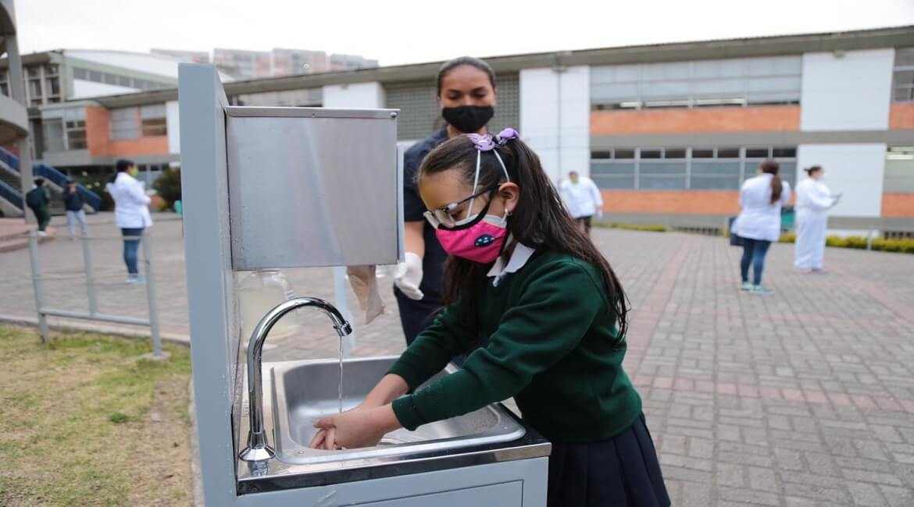

La educación virtual en Colombia se ha adaptado a las nuevas demandas del mercado; para ello, ha sido
necesaria la implementación de nuevas estrategias y herramientas.
La educación en Colombia para el año 2021 debe enfrentar nuevos retos en la asistencia de las clases. Se
están implementado en práctica modelos de alternancia; es decir, se asistirá presencialmente por grupos
y sólamente unos días a la semana, por supuesto, siempre priorizando la asistencia virtual. Cabe
resaltar que, a los estudiantes no se les puede exigir la asistencia presencial, por lo que esto será
opcional.
Por otra parte, la aceleración digital será un factor de competencia fuerte entre universidades, debido
a que los nuevos retos exigen fortalecer la infraestructura tecnológica, adquirir nuevas plataformas que
se adapten a todas las necesidades, y, así mismo, ofrecer factores diferenciadores que le resulten
atractivos a los posibles clientes.
En Colombia y el resto del mundo, desde el año 2020 se demostró que la educación tradicional no estaba
preparada ante muchos escenarios. Arraigados a la cotidianidad, ninguna organización, institución o
persona tuvo la visión de crear estrategias alternas para formarse o capacitarse; sin embargo, aunque al
final se planearon de forma precoz su efectividad fue considerablemente alta.
En 2021, el panorama cambió, o, por lo menos, se espera que sea totalmente diferente. Teniendo en cuenta
todas las situaciones vividas con anterioridad, la educación se trabajará parcialmente en asistencia
remota y alternancia. Adicional, las organizaciones se han comprometido en implementar cursos y
capacitaciones e-learning con el fin de cubrir las demandas de sus colaboradores y evitar elevar
presupuestos que no están estimados dentro de sus planes.
Imagen educación
La pandemia: tragedia para la educación en Colombia
Colombia empezó un confinamiento nacional preventivo en marzo del 2020. Desde entonces, de
acuerdo con los datos del Ministerio de Educación Nacional, MEN, se cerraron 53.717 sedes
educativas;
82%
(43.853) del sector oficial y 18% (9.866) del sector privado.
Esta decisión perjudicó a 9.928.865 estudiantes de la educación básica y media, matriculados en
marzo del 2020. Si no hacemos algo para que las niñas y niños tengan clases presenciales, se les
truncará su futuro y sufrirán un deterioro duradero en calidad de vida.
El sistema educativo se trasladó a la casa desde el principio de la pandemia con pequeñas
excepciones en octubre y noviembre de 2020, cuando se abrieron cerca de 240 colegios privados en
Bogotá.
En 2021, las secretarías de educación han lanzado iniciativas para que las instituciones
oficiales y privadas regresen paulatinamente a la presencialidad. En abril de 2021, apenas el
11,6% de los
estudiantes está asistiendo a clases presenciales bajo el modelo de alternancia. Esto quiere
decir que los estudiantes asisten al colegio uno o dos días a la semana en el mejor de los
casos. A
veces, asisten algunas semanas y, en algunos casos, apenas una o dos veces al mes.

Niña entrando colegio